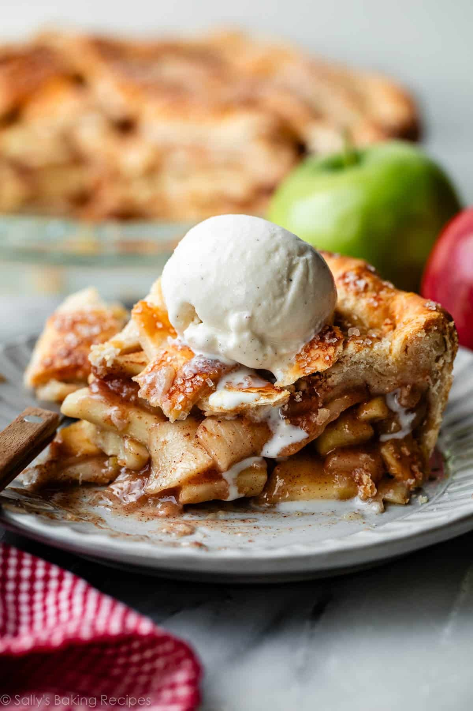

This apple pie recipe has been in my family for generations and never fails to delight.

Ingredients
- (14.1 ounce) package pastry for a 9-inch double-crust pie
- 3/4 cup white sugar, or more to taste
- 1 teaspoon ground cinnamon
- 6 cups thinly sliced apples
- 1 tablespoon butter
Instructions
- Gather the ingredients. Preheat the oven to 450°F (230°C).
- Line a 9-inch pie dish with one pastry crust; set the second one aside.
- Combine 3/4 cup sugar and cinnamon in a small bowl. Add more sugar if your apples are tart.
- Layer apple slices in the prepared pie dish, sprinkling each layer with cinnamon-sugar mixture.
- Dot the top layer with small pieces of butter. Cover with the top crust.
- Bake pie on the lowest rack of the preheated oven for 10 minutes.
Reduce oven temperature to 350°F (175°C) and continue baking until golden brown and filling bubbles,
30 to 35 minutes more. - Serve warm or cold.